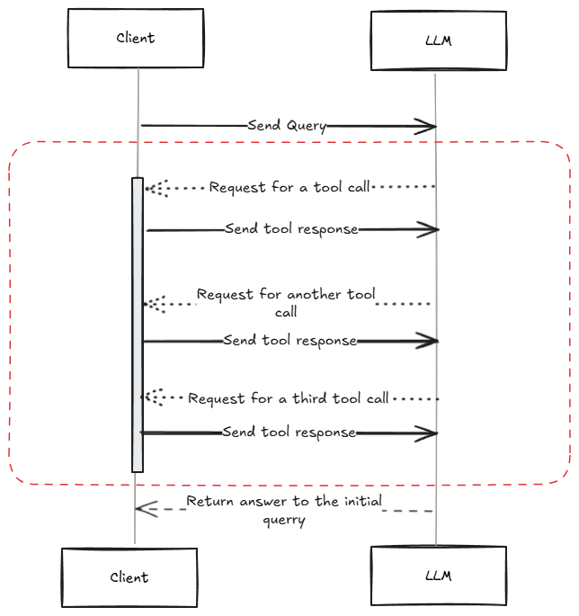

Lessons Learned from Building an MCP Client
Introduction<<
It is May July 2025. By now, everyone and their mother has heard about AI agents, MCP, and all these fancy words being thrown around. According to some, MCP will change the world, while others consider it a marginal improvement over existing solutions. Having a skeptical mind, I decided to fiddle around and figure out what all the fuss is about with this shiny new technology.
What is MCP exactly?<<
MCP (Model Context Protocol) is an open protocol that standardizes how applications provide context to LLMs1. It is a set of rules and concepts defining how additional information can be provided to an LLM to achieve better results from prompts or how to augment LLMs with tools, such as the ability to search the web, use a calculator, or control a computer. The MCP protocol defines other concepts besides tool calling and resources, and it is likely we will see further additions in the future. Currently, tool calling is by far the most widely implemented concept from the specification.
The protocol defines the notions of MCP Servers and MCP Clients. While these resemble the classical client-server architecture, there are certain important differences, such as:
- The majority of MCP Server implementations run locally on the same machine as the MCP Client. Although the protocol provides the option for a remote server, it currently feels somewhat like an afterthought. I am confident this will be improved in the future.
- Many MCP servers are implemented to serve one user at a time. This is somewhat unheard of in the traditional server landscape. However, since most of these servers are intended to be local-first, this is to be expected.
The concepts brought together by MCP are not entirely new. Tool/function calling, for instance, was introduced by OpenAI back in 2023, after which others, such as Anthropic, followed suit with their own support and APIs. The aim of the MCP protocol is to standardize these efforts and provide a common way of implementing agentic workflows.
My Project of Choice<<
Back to my project: I decided to build an MCP client. My idea was to create something similar to Goose CLI. The initial goal was to develop a CLI application that can be executed from a terminal. I aimed to support multiple large language models and enable the configuration of one or more MCP servers.
My programming language of choice for this project was Java. While most online tutorials focus on JavaScript or Python, I wanted to approach this task differently. Java might not be the trendiest option, and it is certainly not always the most recommended choice for a CLI application, but it is not an inherently worse one. Several libraries, such as picocli and jline3, are aimed at helping with the development of text-based CLI applications. Additionally, LangChain4J provides an implementation for many MCP features, although it is still in an experimental phase.
Ultimately, my goal was to get a better understanding of the current state of working with LLMs and MCP using Java. I was not looking to reinvent the wheel.
Lessons Learned<<
Here are a few lessons I learned during development. Some may be obvious to anyone who has spent more than a few minutes with an LLM model, while others might be new.
1. It is really easy to build the main loop of the application
With the help of LangChain4J, it can be implemented in a few lines of code:
while (true) {
try {
// Read something from the user
String line = reader.readLine(">> ", null, (MaskingCallback) null, null);
if (line.isBlank()) {
continue;
}
// Some boilerplate code to handle commands such as /exit from the user
Optional<SessionCommand> command = toCommand(line.strip().toLowerCase());
if (command.isPresent()) {
switch (command.orElseThrow()) {
case SessionCommand.EXIT:
return;
// .. other commands
}
continue;
}
// This is the gist of our app. This makes an API call to the LLM, it automatically handles MCP tools calls and sends back the responses to the LLM.
Result<String> response = llmClient.chat(line, LocalDate.now().toString());
// Print the final answer to the user
stylizedPrinter.printMarkDown(response.content());
}
catch (RateLimitException rateLimitException) {
// ...
} catch (Exception e) {
// ...
}
}
Since it is Java, it is not as concise as it could be, but nevertheless, the main interaction with the LLM can be boiled down to this line:
Result<String> response = llmClient.chat(line, LocalDate.now().toString());
That’s it. The llmClient itself is an interface.
public interface LlmClient {
@SystemMessage(
"""
You are a general-purpose AI agent.
The current date is: {{currentDateTime}}.
...
""")
Result<String> chat(@UserMessage String question, @V("currentDateTime") String currentDateTime);
}
We don’t have to provide an implementation for this interface. All of this is handled under the hood by LangChain. It uses reflection to provide an implementation for this interface; we just have to specify that we want to use that interface for “AI” kind of purposes:
return AiServices.builder(LlmClient.class)
.chatModel(chatModel)
.toolProvider(toolProvider)
.chatMemory(chatMemory)
.build();
I personally don’t like this pattern. It makes our life harder whenever we need to debug something; it can be challenging to place a breakpoint inside something that exists only at runtime.
2. Use a capable model for better outcomes
I’m aware that what I’m saying with this point is obvious to any reader. However, in the case of MCP, it is really important to have a good and powerful model.
First of all, the model should be able to support tool calling/function calling. Nowadays, most LLM models support tool calling, so this is not something we have to worry about.
During development, I had the chance to test out the tool calling capabilities of a few models. To get straight to the most well-known LLM providers, at the time of writing this article, the latest models from Anthropic—Claude Sonnet 4, Claude 3.7, and even Claude 3.5—are, in my opinion, perfectly fine for “any” MCP tool calls. I’m using quotes because, obviously, there can be some counter-examples. Again, from my experience, these models are pretty good for this purpose. For most of my development, I used Claude Sonnet 3.5. It is faster than 3.7 most of the time, and it is good enough to focus on the things that matter when providing responses.
That being said, I had a bad experience with Haiku 3.5. As a concrete example, I built a small MCP server to be able to query AWS cost usage based on a specific time period. Whenever I asked something like what are my costs for the last month, Haiku most of the time forgot what last month was. This information was explicitly provided in the system prompt The current date is: {{currentDateTime}}.. On the other hand, Sonnet 3.5 was entirely fine remembering this piece of information, and it managed to query the correct information each and every time.
Moving on to OpenAI models, the latest O1 model, GPT-4.1, and even GPT-4.5 are also good for anything. From my experience, O1 specifically gives more natural answers compared to any Anthropic model. Claude likes to be as chatty as possible and many times answers with a lot of fluff, while O1 usually tries to stick to the topic. With GPT-4.1, I noticed something interesting. In some cases, it simply avoids calling a tool and answers the question from its own knowledge base. This might be good; it will use fewer tokens, but it can also be a bad thing since it can come up with some nonsense.
From Google, I tried the Gemini 2.5 Pro preview model. This model is also perfectly fine for an MCP client, especially for tool usage.
I also tried Amazon Nova models. I had a really bad experience with Amazon Titan models3 in the past, and unfortunately, I was still struggling with the latest AWS Nova models. For tool usage, everything other than Nova Pro is just borderline usable. Nova Pro itself also managed to hallucinate tools on the fly. This happened only a few times; in most cases, it is able to navigate between tools at hand. Nevertheless, I do not prefer the answers I get from it. More often than not, it feels like something is off. Even Haiku manages to feel more “natural,” although Haiku can simply forget things, as I’ve mentioned before.
What is important is that there are many options. I prefer Sonnet models; I did most of my development using Sonnet 3.5. Probably I would recommend Gemini 2.5 Pro; at the time of writing this article, it is the cheapest as far as I checked, and it is powerful enough for everything we might need.
3. Dealing with all kinds of limits
Here is an exception I managed to receive many times while I was developing my MCP client:
Error: Rate limited by the LLM provider: {
"error": {
"message": "Request too large for gpt-4o in organization org-gqgox1u3NjYa2JiUAHl3HrMn on tokens per min (TPM): Limit 30000, Requested 87968. The input or output tokens must be reduced in order to run successfully. Visit https://platform.openai.com/account/rate-limits to learn more.",
"type": "tokens",
"param": null,
"code": "rate_limit_exceeded"
}
}
And here is another one from Claude:
Error: {"type":"error","error":{"type":"rate_limit_error","message":"This request would exceed the rate limit for your organization (874899f0-c2de-4906-8802-cc478416bee6) of 20,000 input tokens per minute. For details, refer to: https://docs.anthropic.com/en/api/rate-limits. You can see the response headers for current usage. Please reduce the prompt length or the maximum tokens requested, or try again later. You may also contact sales at https://www.anthropic.com/contact-sales to discuss your options for a rate limit increase."}}
The problem we may face while working with LLM models, especially if we do tool calls, is that we cannot really control the size of our messages and also the rate of our messages. What do I mean by this?
- Depending on the MCP servers we use, we might have just a few available tools that return short responses. On the other hand, we might be working with a server that exposes many tools, some of which can generate lengthy responses (looking at you, GitHub MCP). All of these things—tool definitions, requests for tool usage, and responses from tools—become part of the chat context, which ultimately translates to tokens.
- Depending on what the model decides, after a response from an MCP tool call, it can request further tool calls instead of providing a final answer to the initial user query. This will result in more back-and-forth communication between our client and the LLM model, racking up even more token usage.
The challenge with this is that you, as the MCP client developer, cannot really intervene here in any of those cases, especially if you develop a general-purpose MCP client that is meant to be used with any kind of MCP server.
Possible solutions I could think of to deal with the challenge would be the following:
- Try to somehow shorten/compress large MCP server responses. If your client somehow knows what to expect from the MCP tool call and also knows that some parts of the response are irrelevant, you might want to extract only the meaningful part from the response.
- Try to use another model (probably from another vendor) to do a summary of the response from the MCP. This might introduce a bunch of other issues, like information loss, even more token usage (more $), and way more waiting for a final answer to the initial query.
- Apply some rate limiting. Aside from the fact that this could make the user experience way worse, it could be challenging to implement in case we want to support several models from different providers. Limits can be different for each provider; each of them is using a different tokenizer; limits can and will change over time, etc.
4. Let’s Talk about $
The limits we talked about in the previous section are there for several reasons: to save you from racking up a huge bill and also for the LLM providers to save themselves from bad actors. Running an LLM model requires a lot of computing power, hence a lot of energy.
I figured that this would be the time to talk about money from the perspective of a client developer. While developing this client, I spent around $30 on Claude, around $10 on OpenAI, and a few bucks on both Gemini and Bedrock. Models from Bedrock are barely usable because of their aggressive rate limiting, so I could not rack up a huge cost there even if I wanted to.
LLM providers are mainly charging based on the number of tokens used. As I mentioned before, if we add MCP tools to the mix, we kind of lose control over how many tokens we eat up with each query. This, I think, is a problem. In my client, I display the number of tokens used after each user query, but I have no way to estimate either the token usage or the cost beforehand. In the end, it is a good thing to have a limit imposed because I can imagine that we could pretty easily go haywire with a simple query.
6. Overcoming limitations imposed by the Context Windows
Words and phrases we send to LLM models via API calls are transformed into tokens. This action is called tokenization and it is performed by a tokenizer4. There are different tokenization algorithms, the output of each being a set of tokens. Most of the time, we can call these tokens sub-words - they are groups of characters that represent part of the words from the original text.
Why is it important to be aware of this tokenization process?
- LLM providers charge based on the number of tokens.
- Each LLM model has a context window, that is, the amount of input in tokens that the model can accept at any time5.
In case a query from a user cannot fit in the context window of the model, then the outcome will be a huge error response from the model. Nowadays, most of the models have a context window above 128k tokens, a number that is significantly larger than what we had around a year ago (for example, Amazon Titan, a model that was decommissioned at the start of this year, had a context window of 8k tokens). Even with a large context window, MCP usage, especially with tool calling, can quickly become problematic. To illustrate this, let’s break down what a context window will contain:
- System prompt: MCP clients need a system prompt. This can be shorter or lengthier depending on what we consider a good system prompt.
- Definition of each available tool with a description of what it does, description of each argument, and other relevant information. As an example, this is a snippet that will be sent to the model in case we are using GitHub’s MCP server. Emphasis on the part that this is a snippet; the tool definition goes on and on.
"tools" : [ {
"name" : "create_pull_request_review",
"description" : "Create a review on a pull request",
"input_schema" : {
"type" : "object",
"properties" : {
"body" : {
"type" : "string",
"description" : "Review comment text"
},
"comments" : {
"type" : "array",
"description" : "Line-specific comments array of objects to place comments on pull request changes. Requires path and body. For line comments use line or position. For multi-line comments use start_line and line with optional side parameters.",
"items" : {
"type" : "object",
"properties" : {
"body" : {
"type" : "string",
"description" : "comment body"
},
"line" : {
"type" : "number",
"description" : "line number in the file to comment on. For multi-line comments, the end of the line range"
},
"path" : {
"type" : "string",
"description" : "path to the file"
},
"position" : {
"type" : "number",
"description" : "position of the comment in the diff"
},
"side" : {
"type" : "string",
"description" : "The side of the diff on which the line resides. For multi-line comments, this is the side for the end of the line range. (LEFT or RIGHT)"
},
"start_line" : {
"type" : "number",
"description" : "The first line of the range to which the comment refers. Required for multi-line comments."
},
"start_side" : {
"type" : "string",
"description" : "The side of the diff on which the start line resides for multi-line comments. (LEFT or RIGHT)"
}
},
"required" : [ "path", "body" ]
}
},
"commitId" : {
"type" : "string",
"description" : "SHA of commit to review"
},
"event" : {
"type" : "string",
"description" : "Review action ('APPROVE', 'REQUEST_CHANGES', 'COMMENT')"
},
"owner" : {
"type" : "string",
"description" : "Repository owner"
},
"pullNumber" : {
"type" : "number",
"description" : "Pull request number"
},
"repo" : {
"type" : "string",
"description" : "Repository name"
}
},
"required" : [ "owner", "repo", "pullNumber", "event" ]
}
]
...
- User message(s): obviously, user requests will also be included in the context window.
- AI messages: the responses from the model itself will also be part of the context window, in case there is an ongoing conversation, of course.
- Requests from the model for calling tools and responses from tools: as you may have guessed, the whole procedure of executing a tool will also be part of the context window at some point. This is important because, depending on which MCP server we are communicating with, the responses from tools can be short or really, really large. For example, when using GitHub’s MCP server, if I ask what kind of repositories I have, I will get a very lengthy response back, since I have a lot of repositories published to GitHub. To make matters worse, the LLM can request further tool calls after it gets back the response from the one it called.
- AI message summarizing the response from the tool: this happens each time a tool invocation occurs. The model will do its best to either summarize the tool response or to extract the necessary information from the tool response to answer the initial question from the user.

The point of all this was to illustrate that we can fill the available context window quickly. From a user’s perspective, it can be really annoying if, after one or two interactions, the whole communication stream falls apart.
The challenge is: how can we limit the growth of the content sent back and forth between the client and the model? Personally, I don’t think there is a silver bullet to solve this challenge. What I did in my CLI application was try to squash tool messages. Requests and responses from tool calls can be eliminated without losing much information. The goal of the model is to give an answer to the user’s question; tool calls essentially act as additional context (or RAG6) to provide a more accurate answer. What we can do, to be able to continue the conversation for longer, is remove certain “tool messages,” essentially reducing the size of the context we are sending back and forth. In case the model finishes triggering new tool calls and decides to return an answer of its own, we can go back from the client and remove all the tool messages that are not visible to the user anyway.
Again, this is probably a naive solution to the problem at hand, and it has downsides, such as information loss; or, in many cases, it simply does not work if the context window gets filled before the LLM provides a final answer. Nevertheless, it was an attempt to avoid crashing the program as often.
7. Lack of examples/best practices
While scouring the internet for anything meaningful in my quest to build an MCP client application, I learned one thing: there is no clear way of doing it right. Everybody does tool calling; that is easy to understand and to implement. For anything else, well…
My client also supports tool calls. It can also list available resources and prompts, but at this point, these cannot really be used for anything meaningful. MCP offers a lot more concepts. Aside from tools, resources, and prompts, there are concepts such as sampling and elicitation. My client does not use them in any way. My client is essentially a CLI app that can do tool calling. That’s it. Admittedly, there are certain limitations to what is possible to accomplish with a text-based CLI app, but still, my app is nothing special. To be fair, most of the available open-source MCP clients are mainly based on tool calling.
Why mainly tool calling? It is easy to understand, simple to implement, and can be genuinely useful to enhance the capabilities of an LLM model.
In contrast, implementation for MCP resources is more challenging than expected. According to the protocol, resources can be anything7. It is literally impossible to implement a client that can use any kind of resource. I understand that specialized clients, such as code editors with MCP client features, would be able to support text-based resources of git repositories (GitHub MCP servers define them with the protocol repo://), and the notion of resources was essentially invented for this kind of purpose. My main problem with resources is that the protocol definition is really vague for them. And it is similarly vague for other concepts as well.
That being said, I’m pretty sure this will improve in the future as long as the protocol is adopted by many more people and organizations.
Final Thoughts<<
I started writing this article in May 2025. Then life happened, and I had to put it aside to work on other things. Now, at the end of July, a lot has happened in the world of MCP. The protocol definition has improved significantly in the area of security, elicitation was introduced, and HTTP/SE is already considered legacy.
The protocol is still changing, which is good. There are still a lot of rough edges to be ironed out.
From a client development perspective, libraries are getting better. Langchain4j has evolved a lot in the last few months, but it lags behind in implementing everything from the MCP protocol definition. We are getting there.
Additional Links<<
The source code for the CLI application I developed can be found on GitHub: https://github.com/Ernyoke/jmcpx